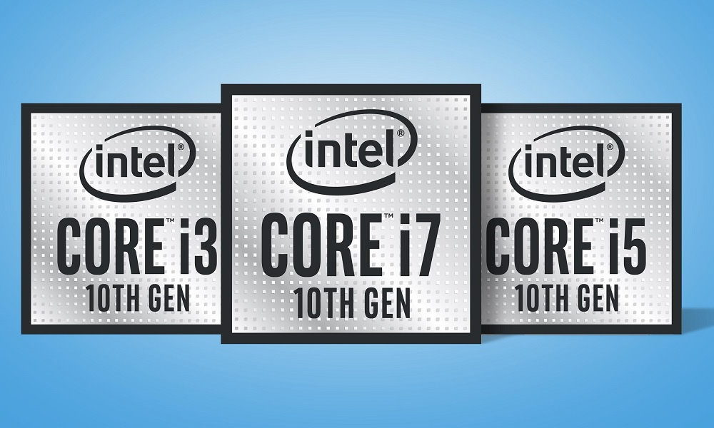
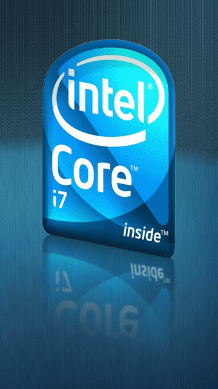

Los nuevos procesadores de Intel Core 10ma Generación ofrecen notables actualizaciones de desempeño para una productividad mejorada y un entretimiento asombroso, incluyendo hasta 5,3 GHz, Intel Wi-Fi 6 (Gig+), tecnología Thuderbolt 3, HDR 4K, optimizacion del sistema inteligente y más.
Aumento de la Productividad
Las características de desempeño inteligente incorporadas aprenden y se adaptan a lo que usted hace, dirigiendo dinámicamente la potencia donde usted más lo necesita. Los procesadores Intel Core 10ma Generación con memoria Optane ofrecen la capacidad de respuesta para hacer más.
Exelente Conectividad
Con Intel Wi-Fi 6 (Gig+) integrado, conexión Intel Ethernet 1225 y tecnología Thunderbolt 3, los procesadores Intel Core de 10ma Generación ofrecen una conectividad con cable e inalámbrica segura y versatil.
Entretenimiento de Primer Nivel
Una nueva arquitectura de gráficos admite experiencias visuales ultravividas como video HDR 4k Y JUEGOS 1080P. Los procesadores Intel Core de 10ma Generación con gráficos Intel Iris Plus le permiten experimentar el entretenimiento como nunca antes.
Gaming Pro
Disfrute de increibles partidas de alto nivel de FPS incluso mientras hace streaming y graba con hasta 5.3 GHz.
Aceleración de memoria Intel Optane y turbo. En casa y desde cualquier lugar, los procesadores Intel Core de 10ma Generación con capacidad de overclocking potencian los mejores equipos de computadoras portátiles y desktops para jugar.


AMD NUEVAS TECNOLOGÍAS
la tercera generación de procesadores AMD Ryzen que, además, estrena arquitectura Zen 2 con un nuevo proceso de fabricación de 7 nanómetros y diseño de chiplets con el que se introduce, por primera vez en la historia, procesadores de 16 núcleos para la gama mainstream. Todo ello con un claro objetivo: superar a Intel incluso en entornos que le podían ser favorables como el gaming.
Tecnología AMD StoreMI
Software que combina la velocidad de SSD con la capacidad de disco duro en una sola unidad rápida y fácil de administrar, gratuita con la placa madre AMD Serie 400.
Tecnología AMD SenseMI
Con la tecnología AMD SenseMI, los procesadores Ryzen™ utilizan inteligencia artificial verdadera para acelerar el rendimiento
Utilidad AMD Ryzen Master
La utilidad de overclocking sencilla y a la vez potente para los procesadores AMD Ryze
Modo Gamer
Los procesadores para computadoras de escritorio Ryzen con gráficos Radeon ofrecen la tarjeta gráfica más rápida para equipos de escritorio. Combinan la potencia de los procesadores Ryzen con todo el poder gráfico de Radeon Vega para que vivas una experiencia de juego de alto rendimiento en los títulos más populares, todo sin necesidad de una tarjeta gráfica aparte.